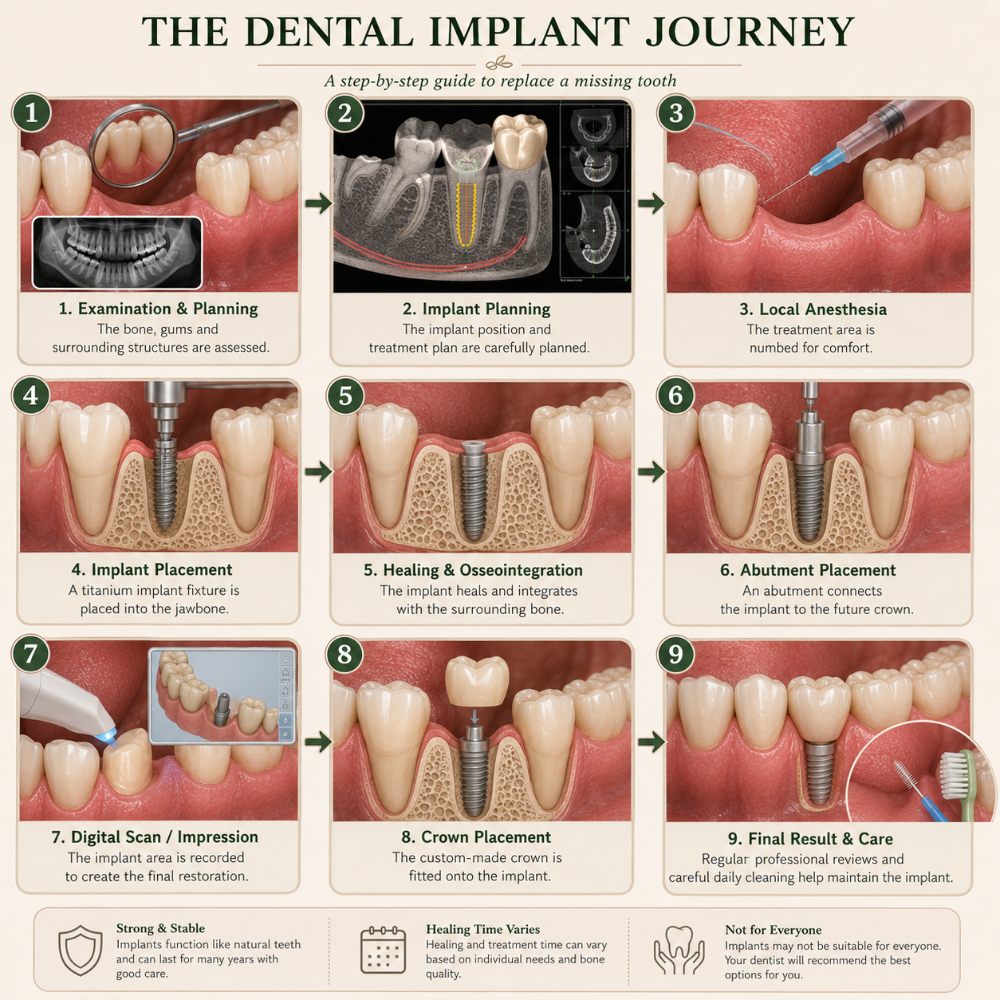

Missing a tooth can affect more than just your smile. Dental implants are one treatment option that can be used to replace missing teeth and support a natural-looking, functional restoration.

A dental implant is a small post, commonly made from titanium or another suitable biocompatible material, that is surgically placed into the jawbone.
The implant acts as a foundation for a replacement tooth. Once healing and integration with the surrounding bone have occurred, the implant can support a restoration such as a dental crown.
In simple terms, the implant replaces the root portion of a missing tooth, while the crown replaces the visible part of the tooth.
Dental implants may be considered when one or more teeth are missing and a patient needs a stable way to support replacement teeth.
When appropriately planned and maintained, dental implants can provide a stable foundation for replacement teeth.
Dental implant treatment is usually carried out in stages. The exact sequence and timing depend on factors such as the condition of the jawbone, gums and surrounding teeth, as well as the type of restoration being planned.
Your dentist assesses your teeth, gums, oral hygiene and available bone. Dental imaging may be used to evaluate the area and plan treatment.
The implant is surgically placed into the jawbone using appropriate anaesthesia and a carefully planned surgical procedure.
The implant is given time to heal and integrate with the surrounding bone. The healing period varies from person to person.
Once the implant is ready, a custom-made restoration, such as a crown, can be attached to restore the missing tooth.
Not everyone is automatically a suitable candidate for implant treatment. A proper examination is necessary before deciding whether an implant is appropriate.
Your dentist may consider factors including:
In some situations, additional treatment may be recommended before an implant can be placed.
The jawbone can change after a tooth is lost. If there is insufficient bone in the planned implant area, your dentist may discuss additional procedures to improve the available bone before or during implant treatment.
Whether such a procedure is necessary can only be determined after an appropriate clinical and radiographic assessment.
Implant placement is performed under appropriate anaesthesia, so the surgical procedure itself should not be painful.
Some swelling, soreness or discomfort can occur after the procedure as the tissues heal. Your dentist will provide specific aftercare instructions and advice about managing discomfort during recovery.
Implant treatment does not usually happen in a single appointment. The implant needs time to heal and integrate with the surrounding bone before it is used to support the final restoration.
The overall treatment timeline can vary considerably. Factors such as bone condition, gum health, additional procedures and the type of restoration can all affect the timing.
Your dentist can give you a more accurate timeline after examining your individual case.
An implant still requires regular care. Although the implant itself cannot develop tooth decay like natural tooth structure, the gums and bone surrounding an implant can develop inflammation and disease.
Successful implant treatment involves the implant, surrounding bone and gums, and the final restoration. Careful planning, good oral hygiene and long-term maintenance all matter.
Dental implants can be an effective option for replacing missing teeth, but there is no single treatment that is right for everyone.
The best option depends on your oral health, bone condition, surrounding teeth, overall circumstances and treatment goals.
If you are considering an implant, the first step is not choosing the implant itself — it is having a proper dental assessment and discussing your options with a qualified dental professional.
If you are unsure whether an implant may be suitable for you, you can ask a general dental question here.
Ask Dr. Anushka →The information on this page is for general educational purposes only and does not replace an in-person dental examination, diagnosis or personalised professional advice.